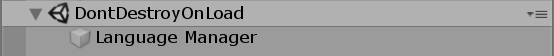
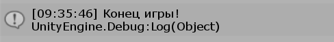

Менеджер языков#
В этой статье мы создадим менеджер языков — особый объект, который будет присутствовать в любой сцене игры. К нему всегда можно будет обратиться из любого скрипта и получить текст фразы по ее ID. Менеджер языков будет реализовывать паттерн "Синглтон".
Что такое синглтон? Максимально ясно смысл синглтона передает вот эта картинка (источник Refactoring Guru):
{kind=link}
Это такой паттерн, при котором у некоторого класса может быть только один единственный экземпляр, к которому обращаются из разных мест в программе.
Проще пояснить на примере. Нам нужно из любого места в игре быстро получить текст фразы по ее ID. Для этого мы должны обратиться к некоторому одному объекту, который есть во всех сценах игры, и с его помощью получить нужный текст.
Основа синглтона#
Создадим класс Lang по пути Scripts/Runtime:
using UnityEngine; namespace I18n { public class Lang : MonoBehaviour { } }
Теперь нам нужно превратить этот класс в синглтон, то есть дать другим возможность обращаться к единственному экземпляру этого класса.
using UnityEngine; namespace I18n { public class Lang : MonoBehaviour { #region Singleton static Lang _instance; public static Lang Instance { get { if (_instance == null) { GameObject lngManager = new GameObject("Language Manager"); _instance = lngManager.AddComponent<Lang>(); DontDestroyOnLoad(lngManager); } return _instance; } } #endregion } }
Опишу подробнее, что тут происходит. Сначала мы создаем приватную статическую переменную _instance, которая и является единственным экземпляром класса Lang.
static Lang _instance;
Но просто так обращаться к ней мы нельзя. Нужно публичное статическое свойство Instance, которое сначала проверяет, был была ли инциализирована переменная _instance раньше.
Если нет, то в сцене создается объект "Language Manager", к нему добавляется компонент типа Lang. Этим же компонентом инициализируем переменную _instance.
GameObject lngManager = new GameObject("Language Manager"); _instance = lngManager.AddComponent<Lang>();
Затем мы помечаем созданный объект с помощью DontDestroyOnLoad. Теперь он не будет пропадать при смене сцены.
DontDestroyOnLoad(lngManager);
Наконец, мы возвращаем инициализированную переменную _instance.
return _instance;
Заметьте, что свойство (как и переменная) должно быть статическим, чтобы к нему обращались без создания экземпляра класса.
Вот и все. Теперь в любой момент в любой сцене игры мы можем обратиться к объекту класса Lang вот так:
Lang.Instance...
Если объект Language Manager уже есть в сцене, вернется компонент Lang. Если его нет, он будет создан и опять же вернется компонент Lang. В этом и заключается суть синглтона.
Инициализация объекта#
Нам нужно выполнить множество действий в момент создания объекта Lang. Выполнить сканирование готовых языков, выявить дубликаты и прочее. Можно выполнять эти действия прямо в коде создания синглтона, но он очень быстро раздуется.
Поэтому создадим для этих целей отдельный метод Init в классе Lang, и вызовем его при создании экземпляра синглтона:
#region Singleton static Lang _instance; public static Lang Instance { get { if (_instance == null) { GameObject lngManager = new GameObject("Language Manager"); _instance = lngManager.AddComponent<Lang>(); _instance.Init(); DontDestroyOnLoad(lngManager); } return _instance; } } #endregion void Init() { }
Теперь Init будет вызываться при первом обращении к синглтону.
Список готовых языков#
В теле класса Lang добавим приватный массив языков, а также переменную для языка по умолчанию:
Language[] langs; Language defaultLang;
Создадим метод LoadLangs и вызовем его в Init:
void Init() { LoadLangs(); } void LoadLangs() { /* Загружаем готовые языки здесь */ }
Теперь возьмемся за содержимое метода LoadLangs. Задачи:
- Найти все языки в папке
Resorces/Languages - Определить язык по умолчанию
- Выявить и оповестить пользователя о различных проблемах (пустой код или имя языка, а также дубликаты)
void LoadLangs() { Language[] _langs = Resources.LoadAll<Language>("Languages"); Dictionary<string, Language> langMap = new Dictionary<string, Language>(); int skipCounter = 0; foreach (var lang in _langs) { if (lang.Info.Code == "") { Debug.LogWarning("Language \"" + lang.Info.Name + "\" has empty code! Skipping!"); skipCounter++; continue; } if (lang.Info.Name == "") { Debug.LogWarning("Language with code \"" + lang.Info.Code + "\" has empty name! Skipping!"); skipCounter++; continue; } if (langMap.ContainsKey(lang.Info.Code)) { Debug.LogWarning("Code (" + lang.Info.Code + ") duplicate for language \"" + lang.Info.Name + "\". Skipping!"); skipCounter++; continue; } if (lang.IsDefault) { defaultLang = lang; } langMap.Add(lang.Info.Code, lang); } langs = langMap.Values.ToArray(); Debug.Log(langs.Length + " languages were loaded. " + skipCounter + " skipped. Default language: \"" + defaultLang.Info.Name + "\""); }
Разберем, что происходит в этом коде. Сначала мы загржаем все доступные языки из папки Resources/Languages. Именно из Resources, так как только к ней ей доступ во время выполнения игры.
Language[] _langs = Resources.LoadAll<Language>("Languages");
Дальше мы создаем словарь вида Код - Язык. Он потребуется для проверки на дубликаты ниже.
Dictionary<string, Language> langMap = new Dictionary<string, Language>();
Счетчик пропущенных языков:
int skipCounter = 0;
Начинаем перебирать загруженные языки. Каждый язык проверям на предмет пустого ID, имени или дубликата (язык с таким кодом уже был загружен). Если проверка не пройдена, выводим соответствующее сообщение, увеличиваем счетчик пропуска и переходим к следующему языку.
Если язык помечен как "Язык по умолчанию", заменяем текущий язык по умолчанию новым.
if (lang.IsDefault) { defaultLang = lang; }
Если проверка пройдена успешно, добавляем язык в словарь.
После проверки всех языков, берем все добавленные языки из словаря и переносим их в переменную langs класса. Выводим сообщение о количестве загруженных, пропущенных языков, а также о языке по умолчанию.
langs = langMap.Values.ToArray(); var defaultName = defaultLang == null ? "none" : defaultLang.Info.Name; Debug.Log(langs.Length + " languages were loaded. " + skipCounter + " skipped. Default language: \"" + defaultName + "\"");
Тестирование#
Не забудьте перенести все существующие языки проекта в папку Resources/Languages!
Чтобы проверить, правильно ли работает загрузка языков, создайте где-нибудь в проекте класс Test и прицепите его к любому объекту в сцене:
using UnityEngine; using I18n; public class Test : MonoBehaviour { // Start is called before the first frame update void Start() { var test = Lang.Instance; } // Update is called once per frame void Update() { } }
Запустите игру в редакторе. В консоли должно появится сообщение:
{kind=link}
Кстати, обратите внимание на окно иерархии объектов сцены. Там должен появиться раздел "DontDestoryOnLoad", а внутри будет наш синглтон "Language Manager". При смене сцены он больше никуда не пропадет, можете проверить.

Язык по коду#
Напишем метод GetLang, который возвращает язык и загруженного набора по его коду. Он пригодится нам позднее:
Language GetLang(string code) { foreach (var lang in langs) { if (lang.Info.Code == code) { return lang; } } Debug.LogWarning("No language with code \"" + code + "\" found!"); return null; }
Если язык с указанным кодом не найден в списке загруженных, то выводится предупреждение в консоль и возвращается null.
Текущий язык#
В нашем менеджере уже есть список всех языков и язык по умолчанию. Но это еще не все. Нужно написать код, для хранения и загрузки языка, который выбрал сам игрок.
Переменные#
В классе Lang создаем две переменные:
Language currentLang; string currentLangCode;
Зачем нужна вторая переменная, если можно обойтись одной? Ответ — для экономии. Зачем сохранять в памяти устройства весь язык, когда можно хранить только его код? На самом деле, есть еще одна причина. Если в будущем мы обновим класс Language, то, возможно, считывание давно сохраненного языка будет невыполнимо.
Поэтому, currentLang используем в игре, а currentLangCode будет сохраняться в памяти устройства.
Создадим еще публичное свойство Current, которое возвращает текущий язык. Оно может пригодиться программистам, которые будут использовать наш пакет:
public static Language Current => Instance.currentLang;
Сохранение и загрузка#
Займемся сохранением и загрузкой переменной currentLangCode.
Сначала пропишем вверху класса Lang используемые библиотеки:
using System.IO; using System.Runtime.Serialization.Formatters.Binary;
Теперь создадим раздел кода "Save and Load current language". Начем с метода SaveCurrent (сохранение):
#region Save and Load current language void SaveCurrent() { if (currentLangCode == null) { return; } BinaryFormatter bf = new BinaryFormatter(); using (FileStream file = File.Create(Application.persistentDataPath + "/lang.data")) { bf.Serialize(file, currentLangCode); } } #endregion
Тут все очень просто.
Если кода текущего языка нет, то ничего сохранять не надо.
Если есть, создаем так называемый "форматтер", который преобразует любой сериализуемый объект в цепочку битов. Затем мы создаем файл lang.data по стандартному пути хранения данных и записываем эту цепочку.
Теперь реализуем загрузку сохраненных данных — метод LoadCurrent:
#region Save and Load current language void SaveCurrent() { if (currentLangCode == null) { return; } BinaryFormatter bf = new BinaryFormatter(); using (FileStream file = File.Create(Application.persistentDataPath + "/lang.data")) { bf.Serialize(file, currentLangCode); } } void LoadCurrent() { if (File.Exists(Application.persistentDataPath + "/lang.data")) { BinaryFormatter bf = new BinaryFormatter(); using (FileStream file = File.Open(Application.persistentDataPath + "/lang.data", FileMode.Open)) { while (file.Position < file.Length) { try { currentLangCode = (string)bf.Deserialize(file); } catch { } } } } currentLang = (currentLangCode == null) ? defaultLang : GetLang(currentLangCode); } #endregion
Сначала мы проверяем, существует ли вообще файл lang.data:
if (!File.Exists(Application.persistentDataPath + "/lang.data")) { return; }
Если да, то открываем его и преобразуем данные внутри в строчку, которую записываем в переменную currentLangCode.
using (FileStream file = File.Open(Application.persistentDataPath + "/lang.data", FileMode.Open)) { while (file.Position < file.Length) { try { currentLangCode = (string)bf.Deserialize(file); } catch { } } }
Наконец, если currentLangCode имеет значение (то есть файл lang.data существует и был успешно прочитан), мы устанавливаем выбранный язык, а если нет — используем язык по умолчанию.
currentLang = (currentLangCode == null) ? defaultLang : GetLang(currentLangCode);
Вызов#
Осталось добавить вызов LoadCurrent в методе Init:
void Init() { LoadLangs(); LoadCurrent(); }
Метод SaveCurrent будем вызывать при смене языка. Об этом ниже.
Смена языка#
Пора дать возможность пользователю менять текущий выбранный язык.
Событие смены языка#
Подключим вверху класса Lang новую библиотеку:
using UnityEngine.Events;
В теле класса добавим публичное событие onLanguageSwitch:
public UnityEvent onLanguageSwitch = new UnityEvent();
Как можно догадаться из названия, это событие будет вызываться в момент, когда изменился текущий язык. Его можно будет прослушивать и обновлять текст в игре.
Метод смены языка#
Создадим метод Switch:
void Switch(string code) { currentLang = GetLang(code); onLanguageSwitch.Invoke(); SaveCurrent(); }
Здесь мы сначала обновляем переменную currentLang новым языком. Затем триггерим событие onLanguageSwitch. В этот момент все, кто его прослушивают обновляют тексты. Наконец, мы сохраняем новый выбранный язык в память устройства.
Получение языков#
Напишем метод GetLangs, который возвращает массив информации о всех загруженных языках:
public static LanguageInfo[] GetLangs() { return Instance.langs.Select(language => language.Info).ToArray(); }
Этот метод будет очень полезен полезен при создании переключателей языка внутри игры.
Получение фраз#
Осталось написать самый главный метод Phrase, который все будут использовать для получения фразы по ее ID.
public static string Phrase(string id) { if (Instance.currentLang == null) { return id; } return Instance.currentLang.GetPhrase(id); }
Не забудем и про реализацию, которая принимает параметры:
public static string Phrase(string id, Dictionary<string, string> phraseParams) { if (Instance.currentLang == null) { return id; } return Instance.currentLang.GetPhrase(id, phraseParams); }
Теперь в любом месте в игре можно получить фразу следующим образом:
Lang.Prhase("...");
Проверим эту функцию в ранее созданом классе Test. Выведем в консолько какую-нибудь фразу языка:
void Start() { var test = Lang.Instance; Debug.Log(Lang.Phrase("game_over!")); }
Запускаем игру:
